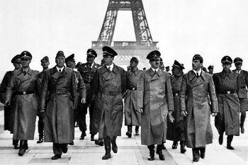
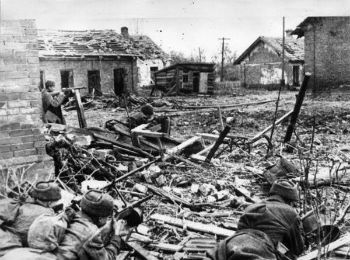
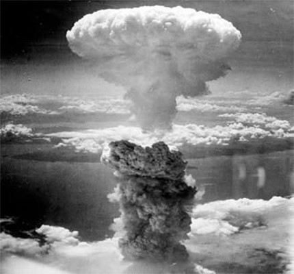

A Segunda Guerra Mundial, iniciada em setembro de 1939, foi a maior catástrofe provocada pelo homem em toda a sua longa
história.
Envolveu setenta e duas nações e foi travada em todos os continentes, de forma direta ou indiretamente. O número de mortos superou os
cinquenta milhões, havendo ainda uns vinte e oito milhões de mutilados.
É difícil de calcular quantos outros milhões saíram do conflito vivos, mas completamente inutilizados devido aos traumatismos psíquicos
a que foram submetidos (bombardeios aéreos, torturas, fome e medo permanente). Outra de suas características, talvez a mais brutal,
foi a supressão da diferença entre aqueles que combatem na fronte e a população civil na retaguarda. Essa guerra foi total. Nenhum
dos envolvidos selecionou seus objetivos militares excluindo os civis.
Atacar a retaguarda do inimigo, suas cidades, suas indústrias, suas mulheres, crianças e velhos passou a fazer parte daquilo
que os estrategistas eufemisticamente classificavam como "guerra psicológica" ou "guerra de desgaste". Naturalmente que a
evolução da aviação e das armas autopropulsadas permitiu-lhes que a antiga separação entre linha de frente e retaguarda fosse
suprimida.
Se a Primeira Guerra Mundial provocou um custo de 208 bilhões de dólares, esta atingiu a impressionante cifra de 1 trilhão e
500 bilhões de dólares, quantia que, se investida no combate da miséria humana a teria suprimido da face da terra.
Aproximadamente 110 milhões de homens e mulheres foram mobilizados, dos quais apenas 30% não sofreram morte ou ferimento.
Como em nenhuma outra, o engenho humano foi mobilizado integralmente para criar instrumentos cada vez mais mortíferos, sendo
empregados a bomba de fósforo, a napalm e finalmente a bomba política de genocídio em massa, construindo-se campos especiais
para tal fim. Com disse o historiador R.A.C. Parker: "O conceito que a humanidade tinha de si mesmo, nunca voltará a ser o
mesmo".
Enfim a Liga das Nações, órgão instituído para manter a paz entre as nações, não conseguiu cumprir o seu papel, e esfacelou
mediante a corrida militarista preparada pelas nações inconformadas pela hegemonia política e militar exercida pelos vencedores
da Primeira Guerra Mundial. Sem possuir uma única razão, essa guerra foi consequência do exacerbado desenvolvimento industrial
das nações europeias. De certa forma, levando em consideração suas especificidades, a Segunda Guerra parecia uma continuidade
dos problemas da Primeira Guerra.
O conflito foi dividido em três fases:
• As vitórias do Eixo (1939-1941);
• O equilíbrio das forças (1941-1943);
• A vitória dos Aliados (1943-1945).
A 2ª Guerra Mundial, se iniciou com a invasão da Polônia pela Alemanha no dia 1º de setembro de 1939. Ela terminou com a
rendição da Alemanha em 8 de maio de 1945.
No Pacífico, as batalhas continuariam até a capitulação do Japão em 2 de setembro de 1945.
As principais frentes de batalha eram formadas pelas:
• As nações do Eixo (integrado por Alemanha, Itália e Japão);
• As nações Aliadas (Grã-Bretanha, União Soviética e Estados Unidos).
A primeira fase da 2ª Guerra Mundial ocorreu com a invasão da Polônia pela Alemanha em 1939.
Essa fase foi classificada como Sitzkrieg, que significa guerra de mentira.
Na tentativa de barrar as incursões do chanceler alemão Adolf Hitler (1889 - 1945), os governos de França e Grã-Bretanha
impuseram bloqueios econômicos à Alemanha. No entanto, não chegaram ao conflito direto.
Eficaz no campo de batalha, a Alemanha realizou em 1940, uma operação em que combinou ataques terrestres, aéreos e navais
para ocupar a Dinamarca. Assim, a Sitzkriegpassou a ser chamada de Blitzkrieg, que significa guerra relâmpago.
O exército alemão também tomou a Noruega como forma de salvaguardar a proteção do comércio de aço com a Suécia e marcar
posição contra a Grã-Bretanha. Para tanto, foi ocupado o porto norueguês de Narvik.
Ainda em 1940, Hitler ordenou a invasão da Holanda, o que ocorreu em maio daquele ano. A Alemanha invadiu, ainda, a
Bélgica e as tropas francesas e inglesas foram cercadas em Dunquenque, uma cidade portuária francesa.
Invasão da França

Hitler passeia em Paris acompanhado de seus colaboradores.
A reação das forças francesas e inglesas não impediram que o exército alemão rompesse a linha Maginot e invadisse a França.
A linha Maginot era constituída por um sistema de trincheiras na divisa com a Alemanha.
Como resposta ao ataque, a França assinou o armistício com a Alemanha e em 14 de junho, Paris foi declarada cidade aberta.
Dividida em duas áreas, a França viveria até 1944, o chamado governo de Vichy, sob influência nazista. Dias antes, a Itália,
aliada da Alemanha, declarava guerra à França.
Ainda em 1940, no dia 8 de agosto, a Alemanha bombardeou as cidades britânicas e o parque industrial inglês com a Luftwaffe, a
força aérea alemã. Assim começou a batalha contra a Grã-Bretanha, que durou até 27 de setembro.
O exército inglês conseguiu neutralizar as forças alemãs, principalmente pelas ações da força aérea.
Além do êxito em seu próprio território, o governo da Grã-Bretanha ordenou incursões em solo alemão. Isto levou Adolf Hitler
adiar os planos de invasão na chamada Operação Leão do Mar.
A despeito do fracasso, a Alemanha ainda prosseguiu com a missão de isolar a Grã-Bretanha. Em 1941, o exército de Hitler
chegou à Líbia, com objetivo de conquistar o canal de Suez.
Esse período foi marcado pelo fracasso da Itália na África Central e a adesão ao Eixo pelos governos da Romênia, Hungria e
Bulgária.
Em maio de 1941, foram ocupadas a Iugoslávia e a Grécia, resultando no esperado isolamento da Grã-Bretanha.
O chamado equilíbrio das forças caracteriza a fase intermediária da Segunda Guerra Mundial, 1941.
Esta etapa se inicia com a invasão da União Soviética, liderada por Stalin, pelos alemães, e termina em 1943, com a
capitulação da Itália.
A invasão da União Soviética é denominada "Operação Barborosa" e tinha como finalidade a conquista de Leningrado (hoje São
Petersburgo), Moscou, Ucrânia e Cáucaso.
A entrada do exército alemão ocorreu pela Ucrânia e, posteriormente, pela chegada à Leningrado.
Quando as forças de Hitler chegaram a Moscou, em dezembro de 1941, foram contidas pela contraofensiva do Exército Vermelho.
Paralelo ao conflito na Europa, as forças do Japão e dos Estados Unidos tinham as relações estremecidas.
Em 1941, o Japão invadiu a Indochina francesa. Como consequência, em novembro daquele ano, os EUA decretaram o embargo
comercial ao Japão, exigindo a desocupação da China e Indochina.
Em meio a negociações diplomáticas entre EUA e Japão, o segundo bombardeou a base naval de Pearl Harbor, no Havaí, e
prosseguiu em ofensiva contra a Ásia meridional e no Pacífico.
Os japoneses invadiram a Malásia Britânica, o porto de Cingapura, a Birmânia, a Indonésia e as Filipinas. Além disso, a
Alemanha e a Itália declararam guerra aos Estados Unidos.
No meio da tensão, o Japão ocupou o porto de Hong Kong e ilhas no Oceano Pacífico que pertenciam à Grã-Bretanha e aos Estados
Unidos.
Até janeiro de 1942, a ofensiva japonesa resultou na conquista de 4 milhões de quilômetros quadrados e o comando de uma
população de 125 milhões de habitantes.
A cenário geral da Segunda Guerra Mundial começa a mudar ao final de 1942, quando os Aliados passam a ter êxito contra os
ataques do Eixo. A Batalha de Stalingrado marca essa fase, alterando o curso do conflito.
O Japão sofre importantes derrotas no Pacífico, sendo impedido de conquistar a Austrália e o Havaí.
As forças britânicas e americanas também tem êxito na Líbia e Tunísia. A partir do Norte da África, os Aliados desembarcam na
Sicília e invadem a Itália, em 1943.
Na manhã do dia 7 de dezembro de 1941 o Japão resolve atacar a base naval dos Estados Unidos de forma surpresa, ou seja, sem
nenhuma declaração de guerra.
Chuichi Nagumo, almirante da Marinha Imperial do Japão, foi quem comandou o ataque.
Tanto os Estados Unidos quanto o Japão, já disputavam a hegemonia do continente asiático. Insatisfeito com a intromissão
estadunidense e a expansão do imperialismo norte-americano, o Japão resolve atacar os Estados Unidos.
Na época, o Japão estava se expandindo rapidamente, travando guerra com diversos países da Ásia, como a China (1894-95); e da
Europa, por exemplo, a Rússia (1904-05).
Com isso, os Estados Unidos resolveram bloquear o abastecimento de produtos essenciais no Japão, estacando também a exportação
do petróleo. A resposta do império nipônico foi um ataque surpresa formado por mais de 350 aviões.
Esse evento, para os estadunidenses, acarretou na morte de aproximadamente 2400 militares, 70 civis e 1170 feridos.
Ademais, 11 navios e 188 aviões da base americana foram destruídos. Do lado japonês cerca de 30 aviões foram destruídos, 74
danificados e 5 submarinos perdidos.

Ataque a Pearl Harbor
Antes de começar a guerra, Hitler e Stálin haviam assinado o Pacto de Molotov-Ribbentrop. Ele consistia em um acordo de
não-agressão, As duas nações se comprometiam a não se atacarem, caso houvesse um conflito na Europa.
Este tratado foi recebido com surpresa pelos comunistas do mundo inteiro, pois esperavam que Stálin fosse fazer frente ao
poderio nazista.
No entanto, após a resistência da Inglaterra, Hitler é obrigado a adiar os planos de invasão da ilha e volta-se para o oeste
rompendo o pacto.
As hostilidades começaram com a invasão alemã rumo a Stalingrado. Essa era uma das cidades mais industrializadas da URSS e
responsável por grande parte da produção bélica do Exército soviético.
Além disso, a cidade tinha o nome de Stálin, o que tinha uma carga simbólica para os alemães.
A Batalha
Apesar dos avanços iniciais dos tanques e dos soldados alemães, uma parte do Exército alemão se atrasou. Com isso, os
soviéticos ganharam tempo para se reorganizar.
Quando as tropas germânicas chegaram a Stalingrado encontraram uma resistência feroz e a cidade foi disputada rua a rua, casa
por casa. Nem mesmo a aviação alemã, bombardeando a cidade constantemente, conseguiu romper a defesa soviética.
Estes se esconderam nos esgotos e aproveitavam os escombros para causar baixas no exército alemão com seus franco-atiradores.
Desta maneira, conquistar Stalingrado tornou-se uma obsessão para Hitler.
Por sua parte, o general alemão Von Paulus, percebia que a sorte já não pendia para os alemães. As ordens de Berlim eram
claras: o general e seus homens deveriam guardar posições. Contudo, vários soldados, apesar da pena de morte para desertores, se renderam.
No entanto, as tropas soviéticas passaram a ofensiva e tomaram o controle aéreo. O general Von Paulus teve que se render com
200 mil soldados alemães em 31 de janeiro de 1943.

A Batalha de Stalingrado envolveu a população civil e deixou a cidade completamente destruída
Entre os motivos considerados determinantes para a vitória soviética estão:
• A concentração das tropas soviéticas na Frente Oriental após a falta de expectativa de auxílio dos Aliados para defender o país da invasão alemã;
• O governo soviético priorizou o aparelhamento do exército com apoio da indústria bélica. Fábricas e trabalhadores foram deslocados, saindo da linha de frente da guerra;
• O exército soviético priorizou a defesa estratégica;
• Os erros estratégicos do exército alemão beneficiaram os soviéticos, que na segunda metade de 1942 elaborava o plano Urano.
• Como parte do plano Urano, 1 milhão de homens, 10 mil cavalos, 430 tanques, 6 mil canhões e 1, 4 mil foguetes Katiucha esperavam os alemães.
• O exército alemão enfrentou problemas de abastecimento porque escolheu erroneamente o método de entrega de alimentos. Como eram lançados pelo ar, 350 mil soldados não conseguiram receber 350 toneladas de alimentos para as necessidades diárias.
O Inverno
Quando a Segunda Guerra Mundial terminou, americanos e soviéticos passaram de aliados a inimigos, por causa da Guerra Fria.
Assim, parte da historiografia americana atribuía ao inverno à vitória soviética em Stalingrado. Esta interpretação encontrava eco na derrota sofrida por Napoleão em 1812.
É certo que o inverno ajudou aos soviéticos, mas estes tinham vantagem em lutar no seu próprio terreno e contaram também com a heroica ajuda da população civil.
A partir da capitulação da Itália, a Segunda Guerra Mundial entra na terceira fase, que termina com a rendição do Japão em 1945.
Na Itália, o governo de Benito Mussolini (1883-1945) é destituído pelo rei Vítor Emanuel III em julho de 1943.
No mês de setembro do mesmo ano, após firmar o armistício com os Aliados, a Itália é retirada do conflito.
Após esse ponto, a Itália declara guerra à Alemanha em outubro de 1943. Em abril de 1945, após a captura das forças nazistas na Itália, Mussolini tenta uma fuga para a Suíça, mas termina por ser fuzilado pela resistência.
O cerco à Alemanha foi fechado, justamente, com a queda da Itália. Em paralelo, em 1944, os soviéticos libertaram a Romênia, a Hungria, a Bulgária e a Tcheco-Eslováquia.
Em 6 de junho daquele ano ocorreu o Dia D. Nesse momento, o exército dos Aliados desembarca na Normandia, norte da França, resultando no recuo dos alemães e a libertação da França.
Ainda na Europa, o Exército Vermelho liberta a Polônia em janeiro de 1945, conquista a Alemanha e derrota o III Reich. Em maio, o conflito termina na Europa.
Do outro lado do mundo, no Pacífico, os Estados Unidos fecham o cerco contra o Japão e no fim de 1944, conquistam as ilhas Marshall, Carolinas, Marianas e Filipinas. A Birmânia é conquistada em 1945 e os EUA ocupam a ilha de Okinawa.
Sob intenso bombardeio, o Japão sofre a pior ofensiva bélica da Segunda Guerra Mundial. Em 6 de agosto de 1945, os Estados Unidos jogam uma bomba atômica sobre Hiroshima.
Em 9 de agosto fazem o mesmo em Nagasaki. A rendição do Japão é assinada em 2 de setembro de 1945, pondo fim ao conflito.

Resto da cidade de Hiroshima após o bombardeio nuclear dos EUA